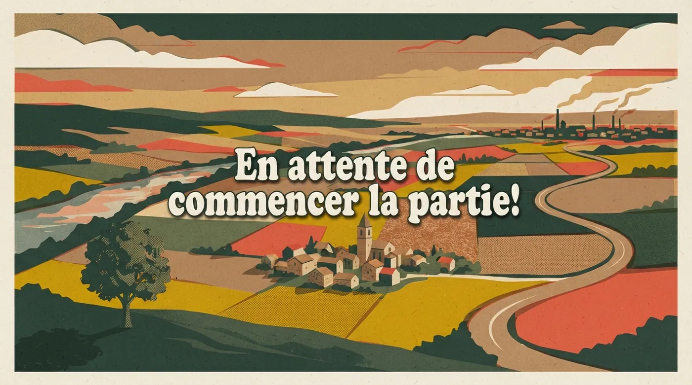

<!DOCTYPE html>
<html lang="fr"><head><meta charset="utf-8">
<meta name="viewport" content="width=device-width,initial-scale=1">
<title>Le point de bascule</title>
<style>
:root{--bg:#f3ead8;--fg:#1d2b27;--gr:#26403a;--tan:#b98b63;--tl:#ecdccb;--go:#c99700;--ok:#2f8f5b;--bad:#b3402f;--card:#fbf5e8;--line:#d9ccb3}
@media(prefers-color-scheme:dark){:root{--bg:#141c19;--fg:#e6ede9;--gr:#7fb3a3;--tl:#3a2f26;--card:#1e2926;--line:#34443f}}
*{box-sizing:border-box}body{margin:0;background:var(--bg);color:var(--fg);font:16px/1.45 system-ui,-apple-system,"Segoe UI",sans-serif}
h1,h2,h3{margin:0 0 .4em;line-height:1.15}h1{font-size:1.5rem}h2{font-size:1.15rem}
.wrap{max-width:1200px;margin:0 auto;padding:14px}
.bar{display:flex;flex-wrap:wrap;gap:12px;align-items:center;justify-content:space-between;background:var(--gr);color:#fff;padding:12px 16px;border-radius:10px}
.bar b{font-size:1.4rem;letter-spacing:.15em}.bar small{opacity:.85}
button{font:inherit;cursor:pointer;border:0;border-radius:8px;padding:10px 16px;background:var(--tan);color:#fff;font-weight:700}
button.alt{background:transparent;border:2px solid currentColor;color:inherit}button:disabled{opacity:.4;cursor:default}
button:focus-visible,input:focus-visible{outline:3px solid var(--go);outline-offset:2px}
.grid{display:grid;grid-template-columns:minmax(0,3fr) minmax(0,2fr);gap:14px;margin-top:14px}
@media(max-width:820px){.grid{grid-template-columns:1fr}}
.box{background:var(--card);border:1px solid var(--line);border-radius:10px;padding:14px}
.kpi{display:flex;gap:10px;flex-wrap:wrap;margin-bottom:10px}.kpi div{flex:1;min-width:110px;padding:8px 10px;border-left:4px solid var(--gr)}
.kpi strong{display:block;font-size:1.6rem}
.cards{display:grid;grid-template-columns:repeat(auto-fill,minmax(210px,1fr));gap:10px}
.c{border:2px solid var(--line);border-radius:10px;overflow:hidden;background:var(--card);text-align:left;padding:0;color:inherit;font-weight:400;display:block;width:100%}
.c .t{padding:8px 10px;color:#fff;font-weight:700;background:var(--tan)}.c.col .t{background:var(--gr)}
.c .b{padding:8px 10px;font-size:.92rem}.c .f{padding:6px 10px;border-top:1px solid var(--line);display:flex;justify-content:space-between;gap:6px;font-size:.9rem}
.c .cn{font-size:.8rem;opacity:.85;padding-top:0}.c .det{padding:5px 10px;font-size:.8rem;text-decoration:underline;border-top:1px dashed var(--line);cursor:pointer}
.lkm{color:#c0392b;font-weight:600}
.leg{display:flex;flex-wrap:wrap;gap:4px 12px;font-size:.78rem;margin:4px 0}.leg i{display:inline-block;width:10px;height:10px;border-radius:2px;margin-right:4px}
.car{display:flex;gap:12px;overflow-x:auto;overflow-y:hidden;scroll-snap-type:x mandatory;padding:4px 2px 12px;-webkit-overflow-scrolling:touch}.car .c{flex:0 0 82%;max-width:340px;scroll-snap-align:center}.car .c .art{max-height:24vh;object-fit:cover}
.c.on{border-color:var(--go);box-shadow:0 0 0 3px var(--go)}.c.off{opacity:.45}
.cost{font-weight:700;color:var(--tan)}.col .cost{color:var(--gr)}
.who{font-size:.8rem;opacity:.85}.pill{display:inline-block;background:var(--tl);border-radius:99px;padding:1px 8px;margin:1px;font-size:.8rem}
.meter{height:12px;background:var(--line);border-radius:6px;overflow:hidden;margin:6px 0}.meter i{display:block;height:100%;background:var(--go)}
input{font:inherit;padding:10px;border:2px solid var(--line);border-radius:8px;width:100%;background:var(--card);color:var(--fg);margin:4px 0 10px}
.big{font-size:2.2rem;font-weight:800}.win{color:var(--ok)}.lose{color:var(--bad)}
svg text{fill:var(--fg);font-size:11px}
h1,h2,.bar b,.big{font-family:Georgia,"Iowan Old Style","Times New Roman",serif}
.box,.bar{box-shadow:4px 4px 0 rgba(38,64,58,.16)}
body::before{content:"";position:fixed;inset:0;pointer-events:none;opacity:.07;z-index:5;background:url("data:image/svg+xml;utf8,<svg xmlns='http://www.w3.org/2000/svg' width='200' height='200'><filter id='n'><feTurbulence type='fractalNoise' baseFrequency='.9' numOctaves='2'/></filter><rect width='100%' height='100%' filter='url(%23n)'/></svg>")}
.scene{position:relative;aspect-ratio:16/6;overflow:hidden;border-radius:8px;margin-bottom:10px;background:var(--line)}
.scene img{position:absolute;inset:0;width:100%;height:100%;object-fit:cover;object-position:center 58%;opacity:0;transition:opacity 1.6s}.scene img.on{opacity:1}
.art{display:block;width:100%;height:92px;object-fit:cover;background:#f3ead8}
.ban{display:block;width:100%;height:90px;object-fit:cover;object-position:center 58%;border-radius:8px;margin-top:10px}
.c.sel{border-color:#e8604c;box-shadow:0 0 0 4px #e8604c}.c.on .t{background:var(--go)}
.mini{margin:12px 2px;font-size:.95rem}.cards.big{grid-template-columns:repeat(auto-fill,minmax(250px,1fr))}.big .t{font-size:1.1rem}
select{font:inherit;padding:6px;border-radius:6px}
.lic{max-width:1200px;margin:6px auto 26px;padding:0 14px;font-size:.8rem;opacity:.85;display:flex;gap:8px;align-items:center}.lic a{color:inherit}
.btnl{display:inline-block;background:var(--go);color:#fff;font-weight:700;padding:10px 14px;border-radius:8px;text-decoration:none}
.modal{position:fixed;inset:0;background:rgba(20,28,25,.88);z-index:20;display:flex;align-items:center;justify-content:center;gap:28px;padding:14px;flex-wrap:wrap;overflow:auto}
.modal .imgw{width:min(92vw,520px)}.modal .side{max-width:380px;color:#fff}.modal h2{color:#fff}
</style></head><body><div class="wrap" id="app"></div>
<footer class="lic"><svg width="22" height="22" viewBox="0 0 22 22" aria-hidden="true"><circle cx="11" cy="11" r="10" fill="none" stroke="currentColor" stroke-width="1.5"/><text x="11" y="14.6" text-anchor="middle" font-size="9" font-weight="700" fill="currentColor" font-family="Arial,sans-serif">cc</text></svg><span>© M. Scansetti · <a href="https://creativecommons.org/licenses/by-nc-sa/4.0/deed.fr" target="_blank" rel="noopener">CC BY-NC-SA 4.0</a></span></footer>
<script src="https://cdn.jsdelivr.net/npm/@supabase/supabase-js@2.116.0/dist/umd/supabase.js"></script>
<script>
// ===== Configuration : à remplir avec votre projet Supabase (Project Settings > API). Vide = mode démo local (onglets du même navigateur).
const SB_URL='https://kdrranzflcglaziwgtut.supabase.co', SB_KEY='sb_publishable_GgXZdy6igYMO9qhK_gobgw_GFc_QvnJ'; // SB_URL : https://xxxx.supabase.co   SB_KEY : clé « publishable » (sb_publishable_...)
// ===== Paramètres du jeu (valeurs de départ à ajuster)
const FR=8.2, WORLD=6.4, TARGET=2, HEARTS=8 /* cœurs de base par tour individuel, cumulables */, BUD0=4 /* Md€, budget du 1er tour collectif */, BUDMAX=6.5 /* Md€, plafond au dernier tour */, PUB=1.5 /* socle services publics, t */, ROUNDS=4 /* 4 tours = 4 × (individuel + collectif) = tours 1 à 8 du jeu physique */, BASE=.7 /* adhésion sociale de départ */;
// Cartes individuelles : [id, titre, objectif, coût ♥, effet t/pers. (ESTIMATION, jamais affichée), rejouable, influence, condition]
// Cartes collectives : [id, titre, objectif, coût en Md€, effet t/pers. (ESTIMATION, jamais affichée), bonus d'adhésion, part de l'effet sur le socle public (0–1), condition, cartes déjà adoptées requises]
// Les 4 tours du jeu = (tour individuel n°2r−1) + (tour collectif n°2r) du jeu physique
const IND1=[
[1,'Régime flexitarien','Viande et poisson 2 fois par semaine maximum',4,.5],
[2,'Remplacer la viande rouge','Toute la viande rouge remplacée par de la viande blanche',2,.25],
[3,"Moins d'œufs et de produits laitiers",'2 fois moins',1,.15],
[4,'Manger local','Distances de fret réduites de 90 %',1,.1],
[5,'Manger bio','Au moins 50 % d’aliments bio',2,.05],
[6,"Moins d'emballages",'2 fois moins d’emballages',2,.05],
[7,'Réduire ses déchets alimentaires','50 % de gaspillage en moins',2,.1,1],
[8,'Moins de boissons','2 fois moins (hors eau fraîche)',3,.1],
[9,'Se former','Lire un livre ou suivre un MOOC',1,0,1,1,'Demander une suggestion de lecture (ou de MOOC) aux autres participants.'],
[10,'Sensibiliser son entourage','Débattre avec un ami, un collègue, un parent',1,0,1,1],
[11,'Utiliser les médias sociaux pour sensibiliser le public','Poster et commenter régulièrement sur ses réseaux sociaux préférés des informations sur le changement climatique',1,0,1,1]];
const COL1=[
[12,'Réduire les pertes alimentaires','Diviser par 2 les pertes dans chaque pays',.5,.1],
[13,'Pratiques agricoles durables','Moins d’engrais et d’émissions liées aux animaux',2,.2],
[14,'Riziculture efficiente','Rizières très efficientes : de 20 % à 60 %',.5,.01],
[15,'Préservation des espaces naturels','Fin de la destruction liée à l’expansion agricole',2,.15],
[16,'Un jour sans viande par semaine','Partout dans le monde',.5,.2],
[59,'Étendre les plans éducatifs','Éducation des filles et climat dans le supérieur',.5,0,.1]];
const IND2=[
[17,'Télétravail et visioconférence','2 jours de télétravail par semaine ET 50 % des kilomètres en avion pour les voyages d’affaires remplacés par des visioconférences',2,.3,0,0,'Le télétravail est très rarement pratiqué dans la réalité.'],
[18,'Moins de voiture, plus de transports alternatifs','Remplacer 50 % des déplacements quotidiens en voiture par 25 % de transports publics et 25 % de vélo/marche à pied',3,.5,0,0,'Pouvoir réduire en pratique l’utilisation de la voiture pour les petits déplacements quotidiens'],
[19,'Covoiturage','1 passager supplémentaire sur 50 % des trajets quotidiens',3,.25,0,0,'S’associer à un autre participant pour faire du covoiturage'],
[20,'Éco-conduite et climatisation modérée','Principaux gestes d’éco-conduite, vitesse moyenne réduite de 7 km/h, climatisation modérée',2,.15,0,0,'Avoir son permis de conduire'],
[21,'Réduire les distances des déplacements lointains','Réduire de 50 % les kilomètres parcourus pour les déplacements lointains',3,.25,1,0,'Pensez à une destination plus proche qui pourrait être une prochaine destination de vacances.'],
[22,'Changer pour une voiture électrique','Remplacer sa voiture thermique par une voiture électrique de puissance et de poids similaires',4,.6,0,0,'Sa voiture actuelle doit avoir plus de 10 ans.'],
[23,'Participer à une manifestation ou à une marche pour le climat','Participer à une marche ou à un événement de protestation pour le climat',2,0,1,1],
[24,'Sensibiliser aux éco-gestes sur le lieu de travail','Créer un groupe de travail sur les éco-gestes',2,0,1,1,'Travailler dans un bureau, un magasin ou une usine au moins 2 fois par semaine'],
[25,'Animer un atelier de sensibilisation','Sensibiliser un groupe de 10 personnes',2,0,1,1,'Devenir animateur / animatrice d’un atelier']];
const COL2=[
[26,'Développer les transports publics et les infrastructures urbaines','Porter la part des transports publics dans les transports terrestres mondiaux à une moyenne de 25 %',1,.3,0,.5],
[27,'Améliorer les technologies des véhicules individuels','Remplacer 40 % des moteurs thermiques par des moteurs électriques et améliorer leur rendement énergétique',1,.35,0,.2],
[28,'Augmenter la taxe carbone sur les carburants routiers','Les carburants de substitution représentent 30 % de la consommation de carburant du transport routier de passagers',1,.3,0,.3,'Avoir installé des zones naturelles protégées pour éviter l’augmentation de la déforestation',[15]],
[29,'Améliorer la technologie des avions','Améliorer l’efficacité énergétique de l’avion de 30 % et reporter 10 % de la consommation d’énergie sur des carburants alternatifs',1,.15,0,.3],
[30,'Augmenter la taxe carbone sur le fret routier','Améliorer l’efficacité énergétique des camions et utiliser du biocarburant et de l’électricité',1,.1,0,.3]];
const IND3=[
[31,'Économiser l’électricité','LED, appareils en veille débranchés, équipements en mode éco, séchage sur séchoir plutôt qu’en sèche-linge lorsque c’est possible',1,.1],
[32,'Moins d’eau chaude domestique','Des douches deux fois plus courtes et un lavage du linge deux fois moins chaud',1,.1],
[33,'Moins de chauffage et de climatisation','3 °C de moins à la maison quand on chauffe et/ou 3 °C de plus quand on climatise',2,.25,1,0,'Avoir un joli pull et un T-shirt léger chez soi !'],
[34,'Rénovation et isolation','Réduire de 30 % la consommation d’énergie pour le chauffage et la climatisation',4,.5,0,0,'Être propriétaire de son logement (ou voir avec son propriétaire)'],
[35,'Panneaux solaires photovoltaïques','Remplacer 50 % de son besoin annuel d’électricité par de l’électricité solaire autoproduite',3,.2,1,0,'Avoir accès à une quantité décente de soleil et un espace extérieur disponible'],
[36,'Chauffage électrique efficace','Remplacer son système de chauffage par une pompe à chaleur',3,.5,0,0,'Pouvoir installer une pompe à chaleur dans son logement et avoir accès au réseau électrique'],
[37,'Mener des initiatives au travail pour décarboner l’activité','Réaliser l’évaluation de l’empreinte carbone de son organisation ou de son bureau',4,0,1,1],
[38,'Faire du lobbying auprès des décideurs','Prendre rendez-vous à la mairie',3,0,1,1],
[39,'Investir ses finances dans des projets à faible émission carbone','Passer à une banque à faible émission carbone',2,.15]];
const COL3=[
[40,'Déployer le captage et le stockage du carbone dans les centrales au charbon','100 % des centrales électriques alimentées au charbon ont été améliorées grâce à cette technologie',2,.15,0,.5,'Avoir réalisé une action collective pour réduire la consommation d’électricité',[[41,42]]],
[41,'Investir dans l’efficacité énergétique de l’industrie et du tertiaire','Réduire de moitié la consommation d’énergie des secteurs tertiaire et industriel par rapport à la moyenne mondiale',1.5,.3,0,.5],
[42,'Investir dans l’efficacité énergétique des ménages','Réduire de moitié la consommation d’énergie pour le chauffage ou la climatisation par rapport à la moyenne mondiale',1,.3,0,.3],
[43,'Réfrigération à faible teneur en carbone','Réduire de moitié les fuites de GES de synthèse',.5,.1,0,.3],
[44,'Maîtriser le développement urbain avec une construction économe en matériaux','Appliquer des stratégies d’efficacité matérielle pour le ciment et l’acier pour chaque nouvelle construction',1,.2,0,.4]];
const IND4=[
[45,'Prolonger la durée de vie des biens et des appareils','Appareils électriques et électroménagers, vêtements et autres biens conservés deux fois plus longtemps',3,.3],
[46,'Louer plutôt qu’acheter lorsque c’est possible','Louer, emprunter ou mutualiser le matériel et les livres non numériques',1,.1,0,0,'Connaître un moyen de louer du matériel et/ou avoir un voisin ou une voisine gentil·le !'],
[47,'Consommer de manière responsable','Acheter responsable (d’occasion, biologique, recyclé…) pour les vêtements, appareils électroménagers et marchandises',2,.2,0,0,'Savoir comment acheter des biens d’occasion, dans un magasin ou en ligne'],
[48,'Utiliser les données internet de manière plus modérée','2 fois moins de données consommées',1,.05,0,0,'Connaître au moins un moyen de réduire la consommation de données'],
[49,'Ne plus prendre l’avion','Aucun trajet en avion',4,.6,0,0,'Pour changer de continent, ce sera sur un bateau ou à bord d’une montgolfière !'],
[50,'Organiser une campagne ou un événement de sensibilisation','Organiser un événement pour 100 personnes',4,0,1,1],
[51,'Faire une transition professionnelle','Orienter sa carrière vers un emploi à impact positif',4,0,0,1],
[52,'S’engager en politique','Lancer ou participer à une campagne avec des objectifs de transition ambitieux',4,0,1,1]];
const COL4=[
[53,'Investir dans l’approvisionnement en énergie des secteurs tertiaire et industriel','85 % de l’énergie des secteurs tertiaire et industriel est électrique ou produite par un système énergétique à faible impact carbone',1.5,.25,0,.5,'Avoir mené une action collective pour réduire la consommation d’énergie des secteurs tertiaire et industriel',[41]],
[54,'Investir dans l’approvisionnement énergétique des ménages','85 % de l’énergie des ménages est électrique ou produite par un système énergétique individuel à faible impact carbone',2,.25,0,.3,'Avoir réalisé une action collective pour réduire la consommation d’énergie du ménage',[42]],
[55,'Décarboner le mix de production d’électricité : étape 1','50 % du mix de production d’électricité est produit par des sources renouvelables',2,.35,0,.6,'Avoir réalisé une action collective pour réduire la consommation d’électricité',[[41,42]]],
[56,'Décarboner le mix de production d’électricité : étape 2','75 % du mix de production d’électricité est produit par des sources renouvelables',2,.35,0,.6,'Avoir choisi la carte Étape 1',[55]],
[57,'Instaurer un « jour 2tonnes »','Réduire de 95 % la consommation et les activités économiques un jour par semaine',.5,.4,0,.3,'Avoir investi dans l’éducation',[59]],
[58,'Imposer un quota de carbone','Fixer des limites par personne en matière de transport, d’énergie domestique et de consommation',.5,.6,0,.3,'Consensus de tous les participants']];
const DECKS={1:{ind:IND1,col:COL1},2:{ind:IND2,col:COL2},3:{ind:IND3,col:COL3},4:{ind:IND4,col:COL4}};
const EFF_IND=.8; // calibrage provisoire (simulations) : effets individuels × 0,8 pour que 2 t soit atteignable seulement avec un engagement quasi total
Object.values(DECKS).forEach(x=>x.ind.forEach(d=>{d[4]=Math.round(d[4]*EFF_IND*100)/100}));
const IND=IND1,COL=COL1;
const indOf=r=>{const D=DECKS[r];if(!D)return[];const a=[...D.ind];for(let k=1;k<r;k++)DECKS[k].ind.filter(d=>d[5]).forEach(d=>a.push(d));return a}; // cartes du tour + cartes rejouables des tours précédents
const avail=x=>HEARTS+((x&&x.carry)||0); // cœurs disponibles : 8 + cœurs non dépensés des tours précédents
const snap=v=>Math.round(v*2)/2; // budget arrondi au 0,5 Md€ le plus proche
const reqOk=(r,X)=>Array.isArray(r)?r.some(x=>X.used.includes(x)):X.used.includes(r);
const lk=(d,X)=>(d[8]||[]).some(r=>!reqOk(r,X)); // verrouillée tant qu'une carte requise (ou l'une des cartes d'un groupe) n'a pas été adoptée
const ctitle=id=>{for(const r in DECKS){const d=find(DECKS[r].col,id);if(d)return d[1]}return'#'+id};
const lkm=(d,X)=>{if(!lk(d,X))return'';const m=(d[8]||[]).filter(r=>!reqOk(r,X)).map(r=>Array.isArray(r)?'l’une des cartes '+r.map(x=>'« '+ctitle(x)+' »').join(' ou '):'« '+ctitle(r)+' »');return`<div class="b cn lkm">🔒 Vous n’avez pas choisi ${m.join(' et ')} dans les tours précédents !</div>`};
const okc=(d,X)=>!X.used.includes(d[0])&&d[3]<=X.left&&!lk(d,X);
// ----- Empreinte par catégorie (les 5 catégories de nosgestesclimat.fr)
const KEYS=['tr','se','al','lo','co'],KL={tr:'Transport',se:'Services sociétaux',al:'Alimentation',lo:'Logement',co:'Consommation'},KC={tr:'#2f4bb8',se:'#7b2aa8',al:'#b0451a',lo:'#2f8f5b',co:'#c99700'};
// repères indicatifs (ordres de grandeur arrondis, à ajuster) : moyenne française = 8,2 t ; moyenne mondiale = 6,4 t
const FRC={tr:2.6,se:1.5,al:1.8,lo:1.3,co:1.0},WLC={tr:1.0,se:.8,al:2.0,lo:1.3,co:1.3};
const KW0={40:{lo:.5,tr:.2,co:.3},55:{lo:.5,tr:.2,co:.3},56:{lo:.5,tr:.2,co:.3},53:{lo:.4,co:.6},54:{lo:1},41:{co:1},57:{tr:.25,al:.25,lo:.25,co:.25},58:{tr:.25,al:.25,lo:.25,co:.25}};
// catégorie(s) réduite(s) par une carte (en dehors du socle « services », réductible seulement par les cartes collectives via d[6])
const kw=id=>{if(KW0[id])return KW0[id];if(id>=1000)return{tr:.25,al:.25,lo:.25,co:.25};if((id>=17&&id<=22)||(id>=26&&id<=30)||id===49)return{tr:1};if((id>=1&&id<=8)||(id>=12&&id<=16)||id===59)return{al:1};if((id>=31&&id<=36)||(id>=42&&id<=44))return{lo:1};return{co:1}};
const r2b=x=>Math.round(x*100)/100,split=fp=>{const o={};KEYS.forEach(k=>o[k]=r2b(fp*FRC[k]/FR));return o};
const sync=s=>{s.fp=r2b(KEYS.reduce((a,k)=>a+s.c[k],0));s.pub=s.c.se};
function ensure(s){if(!s.c){s.c0=split(s.fp);s.c=split(s.fp);s.h=s.h||[]}if(!s.c0)s.c0={...s.c};s.h=s.h||[];sync(s)}
// un effet « moyenne française » (e, en t) est proportionnel à la taille de la catégorie chez l'élève ; plancher = 10 % de la valeur de départ
function cut(s,k,v){const c0=s.c0[k]||FRC[k],r=c0/FRC[k];s.c[k]=Math.max(r2b(.1*c0),r2b(s.c[k]-v*r))}
function eff(s,e,w,sv){if(sv)cut(s,'se',e*sv);Object.keys(w).forEach(k=>cut(s,k,e*(1-(sv||0))*w[k]));sync(s)}


const $=s=>document.querySelector(s),app=$('#app'),r2=x=>Math.round(x*100)/100;
const esc=s=>String(s).replace(/[&<>"']/g,c=>({'&':'&amp;','<':'&lt;','>':'&gt;','"':'&quot;',"'":'&#39;'}[c]));
const n1=x=>(+x).toFixed(1).replace('.',','),n2=x=>(+x).toFixed(2).replace('.',',');
const rid=l=>Array.from({length:l},()=>'ABCDEFGHJKMNPQRSTUVWXYZ23456789'[Math.random()*31|0]).join('');
const isT=location.hash==='#prof',TEST=location.hash==='#test';let bus,S,troot,tsel=0,view=0;

function makeBus(room,on,onReady){
  if(TEST){(window.hub=window.hub||[]).push(on);return{send:m=>window.hub.slice().forEach(f=>f(m)),ready:()=>true,reopen(){}}}
  if(SB_URL&&window.supabase){
    // file d'attente : un message envoyé avant l'abonnement au canal est conservé puis envoyé (sinon il était perdu)
    const cl=supabase.createClient(SB_URL,SB_KEY);let ch,ok=false;const q=[];
    const push=m=>ch.send({type:'broadcast',event:'m',payload:m});
    const open=()=>{ok=false;ch=cl.channel('t2-'+room,{config:{broadcast:{self:true}}});
      ch.on('broadcast',{event:'m'},p=>on(p.payload)).subscribe(st=>{
        if(st==='SUBSCRIBED'){ok=true;q.splice(0).forEach(push);onReady&&onReady()}
        else if(st==='CHANNEL_ERROR'||st==='TIMED_OUT'||st==='CLOSED')ok=false})};
    open();
    return{send:m=>{if(ok)push(m);else{q.push(m);if(q.length>30)q.shift()}},ready:()=>ok,reopen(){try{cl.removeChannel(ch)}catch(e){}open()}};
  }
  const bc=new BroadcastChannel('t2-'+room);bc.onmessage=e=>on(e.data);
  return{send:m=>{bc.postMessage(m);on(m)},ready:()=>true,reopen(){}};
}
const find=(a,id)=>a.find(d=>d[0]==id);
const CATS={alimentation:[1,2,3,4,5,6,7,8,12,13,14,15,16],education:[9,10,11,59,23,25,50],transports:[17,18,19,20,21,22,26,27,28,29,30,49],logement:[31,32,33,34,35,36,42,43,44],energie:[40,53,54,55,56],biens:[45,46,47,48,57,58],industrie:[41],services:[24,37,38,39,51,52]};
const back=id=>id<1000?``:'';
const art=id=>{const k=Object.keys(CATS).find(c=>id<1000&&CATS[c].includes(id%100));return k?``:''};
const stageOf=X=>{const v=Object.values(X.st).map(s=>s.fp);if(!v.length)return 0;const a=v.reduce((x,y)=>x+y,0)/v.length,s0=X.hist.length?X.hist[0]:a,p=s0>TARGET?Math.min(1,Math.max(0,(s0-a)/(s0-TARGET))):1;return Math.min(4,Math.floor(p*5))};
let sceneEl;const scene=()=>sceneEl||(sceneEl=Object.assign(document.createElement('div'),{className:'scene',innerHTML:[1,2,3,4,5].map(i=>``).join('')}));
const eu=x=>String(x).replace('.',',')+' Md€',cols=X=>((DECKS[X.round]||DECKS[1]).col).concat(X.custom||[]);
const avgcX=X=>{const v=Object.values(X.st),o={};KEYS.forEach(k=>o[k]=v.length?r2b(v.reduce((a,s)=>a+s.c[k],0)/v.length):0);return o};
const avgc=()=>avgcX(S);
const avgcOld=()=>{const v=Object.values(S.st),o={};KEYS.forEach(k=>o[k]=v.length?r2b(v.reduce((a,s)=>a+s.c[k],0)/v.length):0);return o};
const avg=()=>{const v=Object.values(S.st).map(s=>s.fp);return v.length?r2(v.reduce((a,b)=>a+b,0)/v.length):0};

// ===== Enseignant : détient l'état, les élèves envoient leurs choix
function save(){if(!TEST)localStorage.setItem('t2-S',JSON.stringify(S))}
function bcast(){save();bus.send({t:'state',s:S});T()}
const mkT=()=>makeBus(S.room,onT,()=>bus&&bus.send({t:'state',s:S}));
function newGame(){S={room:rid(4),phase:'lobby',round:0,st:{},hist:[],histc:[],used:[],ret:[],base:BASE,adopt:BASE,share:0,custom:[],vpe:1,dur:120,left:BUD0,budget:BUD0,infI:0,t0:0};save()}
function onT(m){
  if(m.t==='join'){const o=S.st[m.id],c=m.c&&KEYS.every(k=>m.c[k]>=0)?m.c:split(m.fp);S.st[m.id]=o?{...o,name:m.name,on:true}:{name:m.name,fp:r2b(KEYS.reduce((a,k)=>a+c[k],0)),c:{...c},c0:{...c},pub:c.se,h:S.hist.map(()=>({...c})),picks:[],used:[],votes:[],on:true}}
  else if(m.t==='pick'&&S.phase==='ind'&&S.st[m.id]){
    const d=indOf(S.round),s=S.st[m.id],ids=[...new Set(m.cards)].filter(c=>find(d,c)&&(find(d,c)[5]||!s.used.includes(c)));
    if(ids.reduce((a,c)=>a+find(d,c)[3],0)<=avail(s))s.picks=ids}
  else if(m.t==='vote'&&S.phase==='col'&&S.st[m.id]){
    const ok=[...new Set(m.cards)].filter(c=>{const d=find(cols(S),c);return d&&okc(d,S)});
    if(ok.length<=S.vpe)S.st[m.id].votes=ok}
  else if(m.t==='claim'&&S.st[m.id]&&!S.st[m.id].on)S.st[m.id].on=true;
  else if(m.t==='hello'){}
  else return;
  bcast();
}
function tally(){const t={};Object.values(S.st).forEach(s=>(s.votes||[]).forEach(c=>(t[c]=t[c]||[]).push(s.name)));return t}
function validate(c){
  const d=find(cols(S),c),e=r2(d[4]*S.adopt),all=Object.values(S.st);
  all.forEach(s=>{eff(s,e,kw(d[0]),d[6]||0);s.votes=S.vpe===1?[]:s.votes.filter(x=>x!==c)});
  S.base=Math.min(.95,r2(S.base+(d[5]||0)));S.used.push(c);S.ret.push(c);(S.adopted=S.adopted||[]).push({id:c,t:d[1],r:S.round});S.left=r2(S.left-d[3]);tsel=0;view=0;
  if(!cols(S).some(x=>okc(x,S)))return endCol();
  bcast();
}
function snapshot(){S.hist.push(avg());S.histc.push(avgc());Object.values(S.st).forEach(s=>s.h.push({...s.c}))}
function endCol(){snapshot();S.phase=DECKS[S.round+1]?'bilan':'fin';tsel=0;bcast()}
function exportGame(){
  const a=document.createElement('a');a.href=URL.createObjectURL(new Blob([JSON.stringify(S)],{type:'application/json'}));
  a.download='point-de-bascule_tour'+S.round+'_'+new Date().toISOString().slice(0,10)+'.json';a.click();setTimeout(()=>URL.revokeObjectURL(a.href),1500);
}
function importGame(o){
  if(!o||!o.st||!o.hist)throw new Error('format');
  S=o;S.back=S.phase==='resume'?(S.back||'ind'):S.phase;S.room=rid(4);S.phase='resume';S.vpe=1;S.dur=S.dur||120;tsel=0;view=0;
  S.histc=S.histc||[];Object.values(S.st).forEach(s=>{s.on=false;s.votes=s.votes||[];ensure(s)});
  bus=mkT();bcast();
}
function leader(){const t=tally();let best=0,id=0,tie=false;cols(S).forEach(d=>{const n=(t[d[0]]||[]).length;if(!n||!okc(d,S))return;if(n>best){best=n;id=d[0];tie=false}else if(n===best)tie=true});return tie?0:id}
function next(){view=0;
  const ids=Object.keys(S.st),D={...(DECKS[S.round]||{}),ind:indOf(S.round)};
  if(S.phase==='lobby'&&ids.length){S.hist=[];S.histc=[];snapshot();S.round=1;S.phase='ind'}
  else if(S.phase==='ind'){
    ids.forEach(i=>{const s=S.st[i];s.picks.forEach(c=>{const d=find(D.ind,c);eff(s,d[4],kw(d[0]),0);if(!d[5])s.used.push(c)});s.inf=s.picks.some(c=>find(D.ind,c)[6]);s.carry=r2(avail(s)-s.picks.reduce((a,c)=>a+find(D.ind,c)[3],0));s.picks=[]});
    snapshot();
    S.share=ids.length?ids.filter(i=>S.st[i].inf).length/ids.length:0;S.infI=r2((S.infI||0)+S.share);S.budget=S.round===1?BUD0:Math.min(BUDMAX,Math.max(S.budget||BUD0,snap(BUD0+(BUDMAX-BUD0)*Math.min(1,S.infI/ROUNDS))));S.adopt=r2(S.base+(1-S.base)*S.share);S.ret=[];S.t0=Date.now();
    S.phase='pres'}
  else if(S.phase==='pres'){S.left=S.budget;ids.forEach(i=>S.st[i].votes=[]);S.phase='col'}
  else if(S.phase==='col')return endCol();
  else if(S.phase==='resume'){S.phase=S.back||'ind';delete S.back;if(S.phase==='pres')S.t0=Date.now()}
  else if(S.phase==='bilan'){S.round++;S.custom=[];S.phase='ind'}
  else return;
  bcast();
}
function chart(h,st){
  const W=560,H=270,L=34,B=28,top=12,n=Math.max(h.length,2),mx=Math.max(FR+1,...h,...st.map(s=>s.fp)),
  X=i=>L+i*(W-L-14)/(n-1),Y=v=>top+(H-top-B)*(1-v/mx);
  const line=(v,c,l)=>`<line x1="${L}" x2="${W-14}" y1="${Y(v)}" y2="${Y(v)}" stroke="${c}" stroke-dasharray="5 4"/><text x="${W-16}" y="${Y(v)-4}" text-anchor="end">${l}</text>`;
  const pts=h.map((v,i)=>`${X(i)},${Y(v)}`).join(' ');
  return`<svg viewBox="0 0 ${W} ${H}" width="100%" role="img" aria-label="Empreinte carbone par tour">
  ${[0,2,4,6,8,10].filter(v=>v<=mx).map(v=>`<text x="${L-6}" y="${Y(v)+4}" text-anchor="end">${v}</text>`).join('')}
  ${line(FR,'#b3402f','France '+n1(FR)+' t')}${line(WORLD,'#c99700','Monde '+n1(WORLD)+' t')}${line(TARGET,'#2f8f5b','Objectif '+TARGET+' t')}
  ${h.length>1?`<polyline points="${pts}" fill="none" stroke="#26403a" stroke-width="3"/>`:''}
  ${st.map((s,k)=>`<circle cx="${X(h.length-1)+((k%5)-2)*5}" cy="${Y(s.fp)}" r="3.5" fill="#b98b63" opacity=".8"/>`).join('')}
  ${h.map((v,i)=>`<circle cx="${X(i)}" cy="${Y(v)}" r="5" fill="#26403a"/><text x="${X(i)}" y="${H-8}" text-anchor="middle">${lab(i)}</text>`).join('')}</svg>`;
}
const tot=v=>KEYS.reduce((a,k)=>a+(v[k]||0),0);
function stackChart(cs){
  const W=560,H=300,L=34,B=40,top=20,n=cs.length,sl=(W-L-8)/n,bw=Math.min(52,sl*.7),mx=Math.max(FR+.6,...cs.map(c=>tot(c.v))),Y=v=>top+(H-top-B)*(1-v/mx),X=i=>L+(i+.5)*sl;
  return`<svg viewBox="0 0 ${W} ${H}" width="100%" role="img" aria-label="Empreinte carbone par catégorie">
  ${[0,2,4,6,8].filter(v=>v<=mx).map(v=>`<text x="${L-6}" y="${Y(v)+4}" text-anchor="end">${v}</text><line x1="${L}" x2="${W-8}" y1="${Y(v)}" y2="${Y(v)}" stroke="#8883" />`).join('')}
  <line x1="${L}" x2="${W-8}" y1="${Y(TARGET)}" y2="${Y(TARGET)}" stroke="#2f8f5b" stroke-width="2" stroke-dasharray="5 4"/><text x="${L+4}" y="${Y(TARGET)-4}" fill="#2f8f5b">Objectif ${TARGET} t</text>
  ${cs.map((c,i)=>{let acc=0;return KEYS.map(k=>{const v=c.v[k]||0,y1=Y(acc+v),h=Y(acc)-y1;acc+=v;return`<rect x="${X(i)-bw/2}" y="${y1}" width="${bw}" height="${Math.max(0,h)}" fill="${KC[k]}" opacity="${c.x?.55:1}"/>`}).join('')+`<text x="${X(i)}" y="${Y(acc)-4}" text-anchor="middle" font-weight="700">${n1(acc)}</text><text x="${X(i)}" y="${H-B+16}" text-anchor="middle">${esc(c.l)}</text>`}).join('')}
  </svg>`}
const legend=()=>`<div class="leg">${KEYS.map(k=>`<span><i style="background:${KC[k]}"></i>${KL[k]}</span>`).join('')}</div>`;
function catBars(ser){
  const W=560,H=250,L=34,B=34,top=14,mx=Math.max(1,...ser.flatMap(s=>KEYS.map(k=>s.v[k]||0)))*1.1,gw=(W-L-8)/KEYS.length,bw=Math.min(26,gw/(ser.length+1)),Y=v=>top+(H-top-B)*(1-v/mx);
  return`<svg viewBox="0 0 ${W} ${H}" width="100%" role="img" aria-label="Comparaison par catégorie">
  ${[0,1,2,3].filter(v=>v<=mx).map(v=>`<text x="${L-6}" y="${Y(v)+4}" text-anchor="end">${v}</text><line x1="${L}" x2="${W-8}" y1="${Y(v)}" y2="${Y(v)}" stroke="#8883"/>`).join('')}
  ${KEYS.map((k,i)=>{const x0=L+i*gw+gw/2-bw*ser.length/2;return ser.map((s,j)=>`<rect x="${x0+j*bw}" y="${Y(s.v[k]||0)}" width="${bw-2}" height="${Y(0)-Y(s.v[k]||0)}" fill="${s.col}"/><text x="${x0+j*bw+bw/2-1}" y="${Y(s.v[k]||0)-3}" text-anchor="middle" font-size="10">${n1(s.v[k]||0)}</text>`).join('')+`<text x="${L+i*gw+gw/2}" y="${H-B+16}" text-anchor="middle">${KL[k]}</text>`}).join('')}
  </svg><div class="leg">${ser.map(s=>`<span><i style="background:${s.col}"></i>${s.n}</span>`).join('')}</div>`}
const YEARS=[2028,2031,2034,2037,2040,2043,2046,2050],lab=i=>i?YEARS[Math.min(i,8)-1]:'Aujourd’hui';
const refCols=[{l:'France',v:FRC,x:1},{l:'Monde',v:WLC,x:1}];
const withLive=(cs,cur)=>{const l=cs[cs.length-1];if(!l||KEYS.some(k=>Math.abs((l.v[k]||0)-(cur[k]||0))>.004))cs.push({l:'En cours',v:cur});return cs};
function evoBox(){
  const cs=withLive(S.histc.map((c,i)=>({l:lab(i),v:c})),avgc());
  return`<div class="grid" style="margin-top:14px"><div class="box"><h2>Évolution de la classe par catégorie</h2>${stackChart(cs.concat(refCols))}${legend()}</div><div class="box"><h2>Aujourd’hui, catégorie par catégorie</h2>${catBars([{n:'Classe',col:'#26403a',v:avgc()},{n:'France',col:'#b3402f',v:FRC},{n:'Monde',col:'#c99700',v:WLC}])}</div></div>`}
function card(d,type,extra,att,note,X0){const XX=X0||S||{used:[]};
  return`<button class="c ${type} ${extra||''}" ${att||''}>${art(d[0])}<div class="t">${esc(d[1])}</div><div class="b">${esc(d[2])}</div>${d[7]?`<div class="b cn">🔒 ${esc(d[7])}</div>`:''}${lkm(d,XX)}
  <div class="f"><span class="cost">${type==='col'?eu(d[3]):'♥'.repeat(d[3])}</span><span>${type==='ind'?[d[6]?'influence':'',d[5]?'rejouable':''].filter(Boolean).join(' · '):(lk(d,XX)?'verrouillée':'')}${note||''}</span></div>${att?`<div class="det" data-info="${d[0]}">Voir les détails</div>`:''}</button>`;
}
function T(){
  const ids=Object.keys(S.st),st=ids.map(i=>S.st[i]),a=avg(),ok=st.filter(s=>s.fp<=TARGET).length,ph=S.phase,Q=x=>troot.querySelector(x);
  const label={resume:'Reprendre la partie',lobby:'Démarrer le jeu',ind:'Clore les choix individuels',pres:'Passer au débat',col:'Terminer le débat',bilan:'Tour suivant',fin:'Partie terminée'}[ph];
  const url=location.href.split('#')[0].split('?')[0];
  const bar=`<div class="bar"><div><b style="font-size:1.2rem;letter-spacing:0">Le point de bascule</b></div><div><small>Code de la salle</small><br><b>${S.room}</b></div>
  <div>${ph==='col'&&leader()?`<button id="vd">Valider « ${esc(find(cols(S),leader())[1])} »</button> `:''}<button id="nx" ${ph==='fin'||(ph==='lobby'&&!ids.length)?'disabled':''}>${label}</button> ${ph==='col'?'<button class="alt" id="cu">Carte maison</button> ':''}${ph!=='lobby'||ids.length?'<button class="alt" id="ex">Exporter</button> ':''}${ph==='lobby'&&!ids.length?'<button class="alt" id="im">Reprendre une partie</button><input type="file" id="imp" accept=".json" hidden> ':''}<button class="alt" id="rs">Nouvelle partie</button></div></div>`;
  const mini=`<p class="mini">Classe <b>${n1(a)} t</b> · France ${n1(FR)} t · Monde ${n1(WORLD)} t · Objectif ${TARGET} t · Adhésion ${Math.round(S.adopt*100)} % · Budget du tour <b>${eu(S.budget||BUD0)}</b>${ph==='col'?` · restant <b>${eu(S.left)}</b>`:''} · Influence cumulée ${Math.round((S.infI||0)/ROUNDS*100)} %</p>`;
  let main='';
  if(ph==='resume')main=`<div class="box" style="margin-top:14px"><h2>Reprise de la partie — tour ${S.round}</h2><p>Les élèves ouvrent le lien, saisissent le code <b>${S.room}</b>, puis choisissent leur nom dans la liste. Quand tout le monde est là, clique sur « Reprendre la partie ».</p><p>${ids.filter(i=>S.st[i].on).length} / ${ids.length} connectés</p>${ids.map(i=>`<span class="pill">${S.st[i].on?'✔ ':'○ '}${esc(S.st[i].name)}</span>`).join('')}</div>${mini}`;
  else if(ph==='pres')main=`<div class="box" style="margin-top:14px"><h2>Les élèves parcourent toutes les cartes sur leur téléphone — <span id="tm"></span></h2><p><label>Durée <input id="dur" type="number" min="0.5" step="0.5" value="${S.dur/60}" style="width:80px;display:inline-block;margin:0"> min</label> <button class="alt" id="rt">Relancer le chrono</button></p><p class="who">Chaque élève peut faire défiler les cartes et ouvrir leurs données.</p></div><div class="box" style="margin-top:14px"><h2>Cartes du tour — clique sur une carte pour projeter ses données</h2><div class="cards big">${cols(S).map(d=>`<div class="c col" data-card="${d[0]}">${art(d[0])}<div class="t">${esc(d[1])}</div><div class="b">${esc(d[2])}</div><div class="f"><span class="cost">${eu(d[3])}</span><span>${lk(d,S)?'verrouillée':''}</span></div>${d[7]?`<div class="b cn">🔒 ${esc(d[7])}</div>`:''}${lkm(d,S)}</div>`).join('')}</div></div>${mini}`;
  else if(ph==='col'){const t=tally(),mx=Math.max(0,...Object.values(t).map(x=>x.length));
    main=`<div class="box" style="margin-top:14px"><div class="cards big">`+cols(S).map(d=>{const n=t[d[0]]||[],off=!okc(d,S);
      return`<div class="c col ${n.length&&n.length===mx&&!off?'on':''} ${off?'off':''}" data-card="${d[0]}">${art(d[0])}<div class="t">${esc(d[1])}</div><div class="b">${esc(d[2])}</div>${lkm(d,S)}<div class="f"><span class="cost">${eu(d[3])}</span><span><b>${n.length}</b> voix${S.used.includes(d[0])?' · adoptée':''}${lk(d,S)?' · verrouillée':''}</span></div><div class="b who">${n.map(esc).join(', ')}</div></div>`}).join('')+`</div></div>${mini}`}
  else{let side='';
    if(ph==='lobby')side=`<h2>Élèves connectés (${ids.length})</h2>`+st.map(s=>`<span class="pill">${esc(s.name)} · ${n1(s.fp)} t</span>`).join('');
    if(ph==='ind')side=`<h2>Choix individuels</h2><p>${st.filter(s=>s.picks.length).length} / ${st.length} élèves ont validé.</p>`+st.map(s=>`<span class="pill">${s.picks.length?'✔ ':''}${esc(s.name)}</span>`).join('');
    if(ph==='bilan'||ph==='fin'){const ad=S.adopted||[],by={};ad.forEach(x=>(by[x.r]=by[x.r]||[]).push(x.t));
      side=`<h2>${ph==='fin'?'Bilan final':'Bilan du tour '+S.round}</h2><p><b>Empreinte actuelle de la classe (${lab(S.hist.length-1)})</b></p>${stackChart([{l:'Classe',v:avgc()},...refCols])}${legend()}<p style="margin-top:10px"><b>Mesures collectives adoptées depuis le début (${ad.length})</b></p>`+(ad.length?Object.keys(by).map(r=>`<p class="who">Manche ${r}</p>`+by[r].map(t=>`<p>✔ ${esc(t)}</p>`).join('')).join(''):'<p>Aucune.</p>')+
      (ph==='fin'?`<p class="big ${a<=TARGET?'win':'lose'}">${a<=TARGET?'La classe atteint 2 t !':'Moyenne de classe : '+n1(a)+' t'}</p><p>${ok} / ${st.length} élèves sous 2 t. ${a<=TARGET&&ok==st.length?'<b class="win">Double victoire !</b>':''}</p>`:'')}
    main=`<div class="grid"><div class="box"><div id="sh"></div><div class="kpi"><div><small>Moyenne de la classe</small><strong>${n1(a)} t</strong></div><div><small>Élèves sous ${TARGET} t</small><strong>${ok} / ${st.length}</strong></div><div><small>Tour</small><strong>${S.round||'—'} / ${ROUNDS}</strong></div><div><small>Adhésion sociale</small><strong>${Math.round((ph==='lobby'?S.base:S.adopt)*100)} %</strong></div><div><small>Services sociétaux (moy.)</small><strong>${n1(st.length?st.reduce((x,s)=>x+s.pub,0)/st.length:PUB)} t</strong></div></div>${chart(S.hist.length?S.hist:[a],st)}</div><div class="box">${side}</div></div>${evoBox()}`}
  const vc=view&&['pres','col'].includes(ph)&&find(cols(S),view);
  const modal=vc?`<div class="modal"><div class="imgw">${back(view)}</div><div class="side"><h2>${esc(vc[1])}</h2><p>${esc(vc[2])}</p><p><b>${eu(vc[3])}</b></p>${vc[7]?`<p>🔒 ${esc(vc[7])}</p>`:''}${lkm(vc,S)}${ph==='col'&&okc(vc,S)?'<p><button id="mv">Valider cette carte</button></p>':''}<p><button class="alt" id="mc" style="color:#fff">Fermer</button></p></div></div>`:'';
  troot.innerHTML=bar+main+modal;
  const sh=Q('#sh');if(sh){const sc=scene();sh.replaceWith(sc);const k=stageOf(S);[...sc.querySelectorAll('img')].forEach((e,i)=>e.classList.toggle('on',i===k))}
  Q('#nx').onclick=next;Q('#rs').onclick=()=>{if(TEST){location.reload();return}if(confirm('Effacer la partie en cours ?')){newGame();bus=mkT();bcast()}};
  const cu=Q('#cu');if(cu)cu.onclick=()=>{const n=prompt('Nom de la carte proposée par la classe ?');if(!n)return;const c=parseFloat((prompt('Coût en Md€ ?','1')||'').replace(',','.')),e=parseFloat((prompt('Effet en tCO2e par personne ?','0.1')||'').replace(',','.'));if(!(c>0)||!(e>=0))return;S.custom.push([1000*S.round+900+S.custom.length,n,'Carte proposée par la classe',c,e,0]);bcast()};
  const vd=Q('#vd');if(vd)vd.onclick=()=>validate(leader());
  const ex=Q('#ex');if(ex)ex.onclick=exportGame;
  const im=Q('#im'),imp=Q('#imp');if(im){im.onclick=()=>imp.click();imp.onchange=e=>{const f=e.target.files[0];if(f)f.text().then(t=>{try{importGame(JSON.parse(t))}catch(x){alert('Fichier non valide.')}})}}
  const du=Q('#dur');if(du)du.onchange=()=>{S.dur=Math.max(30,Math.round(parseFloat(du.value)*60))||120;S.t0=Date.now();bcast()};
  const rt=Q('#rt');if(rt)rt.onclick=()=>{S.t0=Date.now();bcast()};
  const mv=Q('#mv');if(mv)mv.onclick=()=>{const v=view;view=0;validate(v)};
  const mc=Q('#mc');if(mc)mc.onclick=()=>{view=0;T()};
  troot.onclick=e=>{const c=e.target.closest('[data-card]');if(c){view=+c.dataset.card;T();return}if(e.target.classList&&e.target.classList.contains('modal')){view=0;T()}};
}

// ===== Élève : une instance par élève (plusieurs sur la même page en mode test)
function q(k){return new URLSearchParams(location.search).get(k)}
function mkStudent(root,pre){
  let sb,P,me=pre||null,sel=[],key='',room='',showNew=0,declined=0,tab='v',info=0,lastJ='',lastRx=0;const R=s=>root.querySelector(s);
  const sendJoin=()=>sb.send({t:'join',id:me.id,name:me.name,fp:me.fp,c:me.c});
  const onRdy=()=>{if(!sb)return;if(me)sendJoin();else sb.send({t:'hello'})};
  function onS(m){
    if(m.t!=='state')return;lastRx=Date.now();const j=JSON.stringify(m.s);if(P&&j===lastJ)return;lastJ=j;P=m.s;if(me&&!P.st[me.id]){if(P.phase==='resume')me=null;else sendJoin()}
    const k=P.round+P.phase;if(k!==key){key=k;tab='v';sel=((me&&P.st[me.id])||{}).picks||[]}
    St();
  }
  function St(){
    if(!me){
      const HD='<div class="box" style="max-width:460px;margin:20px auto"><h1>Le point de bascule</h1><p><a class="btnl" href="https://nosgestesclimat.fr" target="_blank" rel="noopener">Calculer mon empreinte carbone</a></p>',old=JSON.parse(localStorage.getItem('t2-me')||'null');
      if(!sb){
        if(old&&!declined){root.innerHTML=`${HD}<p>Tu étais <b>${esc(old.name)}</b> dans la salle <b>${esc(old.room)}</b>.</p><button id="rp">Reprendre</button> <button class="alt" id="ch" style="color:var(--fg)">Changer de salle</button></div>`;
          R('#rp').onclick=()=>{me={id:old.id,name:old.name,fp:old.fp};connect(old.room)};R('#ch').onclick=()=>{declined=1;localStorage.removeItem('t2-me');St()};return}
        root.innerHTML=`${HD}<p>Puis entre le code affiché sur l’écran de l’enseignant.</p><label>Code de la salle<input id="jr" value="${esc(q('r')||'')}" maxlength="4" autocapitalize="characters"></label><button id="jb">Entrer</button><p><small>Pour tout tester sur une seule page : <a href="#test">mode test</a>.</small></p></div>`;
        R('#jb').onclick=()=>{const c=R('#jr').value.trim().toUpperCase();if(c.length!==4){alert('Le code (4 caractères) est affiché en haut de l’écran de l’enseignant.');return}connect(c)};return}
      if(!P){root.innerHTML='<div class="box" style="padding:0;overflow:hidden"></div>';return}
      if(P.phase==='resume'&&!showNew){root.innerHTML=`${HD}<p>La partie reprend. Qui es-tu ?</p>`+Object.entries(P.st).filter(([i,s])=>!s.on).map(([i,s])=>`<button data-claim="${i}" style="display:block;width:100%;margin:4px 0">${esc(s.name)}</button>`).join('')+`<p><button class="alt" id="nw" style="color:var(--fg)">Je suis nouveau</button></p></div>`;
        root.querySelectorAll('[data-claim]').forEach(x=>x.onclick=()=>{const id=x.dataset.claim,s=P.st[id];me={id,name:s.name,fp:s.fp,c:s.c0||s.c};localStorage.setItem('t2-me',JSON.stringify({...me,room}));sb.send({t:'claim',id});St()});
        R('#nw').onclick=()=>{showNew=1;St()};return}
      root.innerHTML=`${HD}<p>Choisis un pseudo (pas de nom réel) et recopie ton résultat, <b>ligne par ligne</b>, en tonnes de CO₂e par an (813 kg = 0,813).</p><label>Pseudo<input id="jn" maxlength="16"></label>${KEYS.map(k=>`<label>${KL[k]}<input id="j_${k}" class="jc" type="text" inputmode="decimal" placeholder="ex. ${n1(FRC[k])}"></label>`).join('')}<p>Total : <b id="jt">0,0</b> t CO₂e par an</p><button id="jb">Rejoindre</button></div>`;
      const pv=k=>parseFloat((R('#j_'+k).value||'').replace(',','.')),upd=()=>{R('#jt').textContent=n1(KEYS.reduce((a,k)=>a+(pv(k)||0),0))};root.querySelectorAll('.jc').forEach(x=>x.oninput=upd);
      R('#jb').onclick=()=>{const name=R('#jn').value.trim(),c={};if(!name){alert('Choisis un pseudo.');return}for(const k of KEYS){const v=pv(k);if(!(v>=0&&v<=30)){alert('Indique « '+KL[k]+' » en tonnes (0 si rien).');return}c[k]=r2b(v)}const fp=r2b(KEYS.reduce((a,k)=>a+c[k],0));if(!(fp>=1&&fp<=40)){alert('Le total doit être compris entre 1 et 40 tonnes.');return}me={id:rid(8),name,fp,c};localStorage.setItem('t2-me',JSON.stringify({...me,room}));sendJoin();St()};return}
    if(!P){root.innerHTML='<div class="box" style="padding:0;overflow:hidden"></div>';return}
    const mine=P.st[me.id]||{fp:me.fp,c:me.c,picks:[],used:[]},AV=avail(mine),D={...(DECKS[P.round]||DECKS[1]),ind:indOf(P.round)},head=`<div class="bar"><div><b>${esc(me.name)}</b><br><small>Mon empreinte</small> <b>${n1(mine.fp)} t</b><br><small>dont services sociétaux ${n1(mine.pub??me.fp*.18)} t, réductibles seulement par les mesures collectives</small></div><div><small>Classe</small> <b>${n1(P.hist.length?P.hist[P.hist.length-1]:me.fp)} t</b> · <small>objectif ${TARGET} t</small></div></div>`;
    let body='';
    if(P.phase==='lobby'||P.phase==='resume')body='<div class="box" style="padding:0;overflow:hidden"></div>';
    if(P.phase==='ind'){const spent=sel.reduce((a,c)=>a+find(D.ind,c)[3],0);
      body=`<div class="box"><h2>Mes choix individuels — ${AV-spent} ♥ restants</h2><p class="who">${AV} ♥ ce tour (${HEARTS}${AV>HEARTS?` + ${AV-HEARTS} non dépensés lors des tours précédents`:''}). Les cœurs non dépensés sont reportés.</p><div class="meter"><i style="width:${Math.min(100,spent/AV*100)}%"></i></div><p><button id="ok">Valider mes choix</button> ${(mine.picks.length&&sel.join()===mine.picks.join())?'✔ envoyé':''}</p><div class="cards">`+
      D.ind.map(d=>{const on=sel.includes(d[0]),dead=!d[5]&&mine.used.includes(d[0]),no=!on&&(dead||spent+d[3]>AV);return card(d,'ind',(on?'on ':'')+(no?'off':''),`data-a="tog" data-id="${d[0]}" ${no?'data-off="1"':''}`)}).join('')+`</div></div>`}
    if(P.phase==='pres')body=`<div class="box"><h2>Les cartes du tour</h2><p class="who">Fais défiler vers la droite pour les parcourir toutes, touche « Voir les détails » pour lire les données.</p></div><div class="car">`+cols(P).map(d=>card(d,'col','',`data-a="info" data-id="${d[0]}"`,'',P)).join('')+`</div>`;
    if(P.phase==='col'){const mv=mine.votes||[],left=P.left;
      body=`<div class="box"><h2>Débat — budget restant ${eu(left)} (sur ${eu(P.budget||BUD0)})</h2><p class="who">Un seul vote : touche la carte que tu soutiens (touche-la de nouveau pour le retirer).</p><div class="cards">`+
      cols(P).map(d=>{const dead=P.used.includes(d[0])||lk(d,P)||(d[3]>left&&!mv.includes(d[0])),t=Object.values(P.st).filter(s=>(s.votes||[]).includes(d[0])).length;
        return card(d,'col',(mv.includes(d[0])?'on ':'')+(dead?'off':''),`data-a="vote" data-id="${d[0]}" ${dead?'data-off="1"':''}`,` · ${t} voix`,P)}).join('')+'</div></div>'}
    if(P.phase==='bilan'||P.phase==='fin'){
      const cur=mine.c||split(mine.fp),mi=withLive((mine.h||[]).map((c,i)=>({l:lab(i),v:c})),cur),ca=avgcX(P),cl=withLive((P.histc||[]).map((c,i)=>({l:lab(i),v:c})),ca);
      body=`<div class="box"><h2>${P.phase==='fin'?'Bilan final':'Bilan du tour '+P.round}</h2><p class="big ${mine.fp<=TARGET?'win':''}">${n1(mine.fp)} t</p><p>${mine.fp<=TARGET?'Tu es sous 2 t !':'Encore '+n1(mine.fp-TARGET)+' t à gagner pour atteindre 2 t.'} · la classe : <b>${n1(P.hist.length?P.hist[P.hist.length-1]:mine.fp)} t</b></p></div>
      <div class="box"><h2>Mon évolution</h2>${stackChart(mi.concat(refCols))}${legend()}</div>
      <div class="box"><h2>L’évolution de la classe</h2>${stackChart(cl.concat(refCols))}${legend()}</div>
      <div class="box"><h2>Catégorie par catégorie</h2>${catBars([{n:'Moi',col:'#e8604c',v:cur},{n:'Classe',col:'#26403a',v:ca},{n:'France',col:'#b3402f',v:FRC},{n:'Monde',col:'#c99700',v:WLC}])}</div>`}
    const ic=info&&(find(D.ind,info)||find(cols(P),info)),mod=ic?`<div class="modal" data-close="1"><div class="imgw">${back(ic[0])}</div><div class="side"><h2>${esc(ic[1])}</h2><p>${esc(ic[2])}</p>${ic[7]?`<p>🔒 ${esc(ic[7])}</p>`:''}<p><button class="alt" data-close="1" style="color:#fff">Fermer</button></p></div></div>`:'';
    const car0=R('.car'),sl=car0?car0.scrollLeft:0;
    root.innerHTML=head+`<div style="margin-top:12px">${body}</div>`+mod;
    const car1=R('.car');if(car1)car1.scrollLeft=sl;
  }
  function connect(r){room=r;sb=makeBus(r,onS,onRdy);if(sb.ready())onRdy();St();
    // reconnexion automatique : on redemande l'état tant qu'on ne l'a pas, et on rouvre le canal au retour sur la page
    setInterval(()=>{if(!sb)return;if(!P||(me&&!P.st[me.id]))onRdy();else if(!TEST&&Date.now()-lastRx>15000&&!document.hidden){lastRx=Date.now();sb.reopen()}},3000);
    document.addEventListener('visibilitychange',()=>{if(!document.hidden&&sb&&!TEST){lastRx=Date.now();sb.reopen();if(sb.ready())onRdy()}});
    addEventListener('online',()=>{if(sb&&!TEST){sb.reopen();if(sb.ready())onRdy()}})}
  root.addEventListener('click',e=>{
    const ci=e.target.closest('[data-info]');if(ci){info=+ci.dataset.info;St();return}
    if(e.target.closest('[data-close]')&&(e.target.dataset.close||e.target.closest('button'))){info=0;St();return}
    const b=e.target.closest('button');if(!b||!me||!sb||b.dataset.off)return;
    if(b.dataset.a==='info'){info=+b.dataset.id;St();return}
    if(b.dataset.a==='tog'){const id=+b.dataset.id;sel=sel.includes(id)?sel.filter(x=>x!==id):[...sel,id];St()}
    if(b.dataset.a==='vote'){const id=+b.dataset.id,mv=(P.st[me.id]||{}).votes||[];let n=mv.includes(id)?mv.filter(x=>x!==id):[...mv,id];if(P.vpe===1&&n.length>1)n=[id];if(n.length>P.vpe)return;sb.send({t:'vote',id:me.id,cards:n})}
    if(b.id==='ok')sb.send({t:'pick',id:me.id,cards:sel});
  });
  // joue au hasard (mode test)
  function auto(){
    if(!P||!P.st[me.id])return;const mine=P.st[me.id],D={...(DECKS[P.round]||DECKS[1]),ind:indOf(P.round)};
    if(P.phase==='ind'){let left=avail(mine);const c=[];[...D.ind].sort(()=>Math.random()-.5).forEach(d=>{if(d[3]<=left&&(d[5]||!mine.used.includes(d[0]))&&Math.random()<.7){c.push(d[0]);left-=d[3]}});sel=c;sb.send({t:'pick',id:me.id,cards:c})}
    if(P.phase==='col'){const c=cols(P).filter(d=>okc(d,P)).sort(()=>Math.random()-.5).slice(0,1);sb.send({t:'vote',id:me.id,cards:c.map(d=>d[0])})}
  }
  if(pre)connect(pre.room);else St();
  return{auto};
}

// ===== Démarrage
setInterval(()=>{const e=document.getElementById('tm');if(e&&S&&S.phase==='pres'){const r=Math.max(0,(S.dur||120)-Math.floor((Date.now()-S.t0)/1000));e.textContent=r?Math.floor(r/60)+':'+String(r%60).padStart(2,'0'):'temps écoulé';e.style.color=r?'':'#e8604c'}},1000);
addEventListener('hashchange',()=>location.reload());
if(TEST){
  newGame();
  app.innerHTML=`<div id="tb"></div><div class="box" style="margin-top:14px"><button id="add">+ Un élève</button> <button id="add5" class="alt">+ 5 élèves</button> <button id="aut" class="alt">Faire jouer tous les élèves au hasard</button><p class="who">Mode test : tout se passe sur cette page, rien n’est envoyé en ligne. Les élèves sont en bas ; clique sur « Démarrer le jeu » en haut quand tu en as ajouté.</p></div><div id="sts" style="display:grid;grid-template-columns:repeat(auto-fill,minmax(320px,1fr));gap:12px;margin-top:14px"></div>`;
  troot=$('#tb');bus=mkT();T();
  const studs=[],add=()=>{const d=document.createElement('div');d.style.cssText='max-height:560px;overflow:auto';$('#sts').append(d);
    studs.push(mkStudent(d,{id:rid(8),name:'Élève '+(studs.length+1),fp:r2(7+Math.random()*3),room:S.room}))};
  $('#add').onclick=add;$('#add5').onclick=()=>{for(let i=0;i<5;i++)add()};$('#aut').onclick=()=>studs.forEach(x=>x.auto());
  for(let i=0;i<3;i++)add();
}else if(isT){
  S=JSON.parse(localStorage.getItem('t2-S')||'null');if(!S)newGame();S.vpe=1;S.dur=S.dur||120;if(S.left==null)S.left=BUD0;if(S.budget==null)S.budget=BUD0;S.infI=S.infI||0;S.histc=S.histc||[];Object.values(S.st).forEach(x=>{x.votes=x.votes||[];ensure(x)});
  troot=app;bus=mkT();bus.send({t:'state',s:S});T();
  // battement de cœur : toutes les 4 s l'état est renvoyé, un élève qui se (re)connecte arrive tout de suite sur la bonne page
  setInterval(()=>{if(bus)bus.send({t:'state',s:S})},4000);
  document.addEventListener('visibilitychange',()=>{if(!document.hidden&&bus&&bus.reopen)bus.reopen()});
}else mkStudent(app);
</script></body></html>
